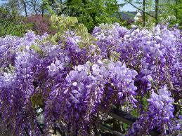

Glycine

Glycine (Wisteria sinensis de la famille des Fabacées)
Toxique pour le Korat.
Partie toxique pour les chats en général et le Korat en particulier :
Toute la plante et particulièrement les gousses.
Symptômes du processus pathologique :
Diarrhée, problèmes circulatoires, dilatation des pupilles, vomissements.
Origine de la toxicité (principe actif) :
Composés toxiques méconnus (wistérine), phytoagglutinine.